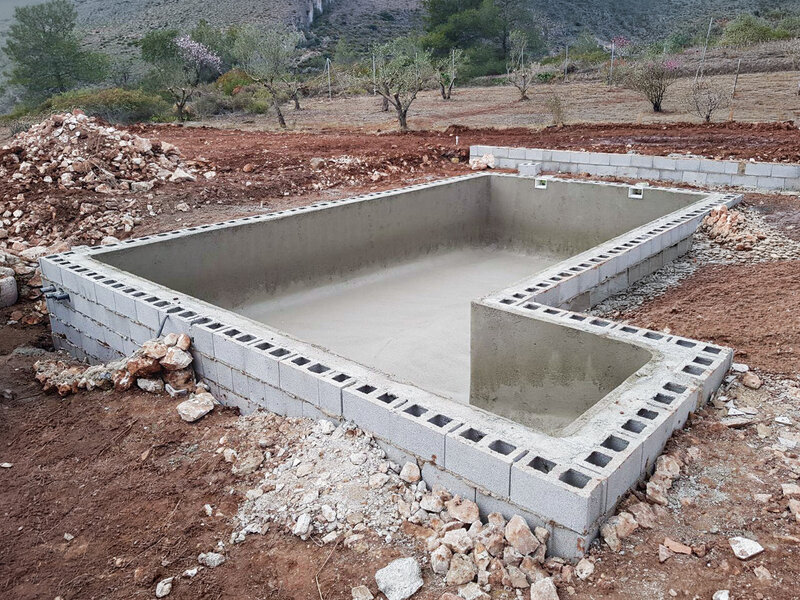
Construccion de piscinas
Obra completa a medida: excavacion, ferralla, gunitado, impermeabilizacion y revestimiento.
- Construccion piscinas
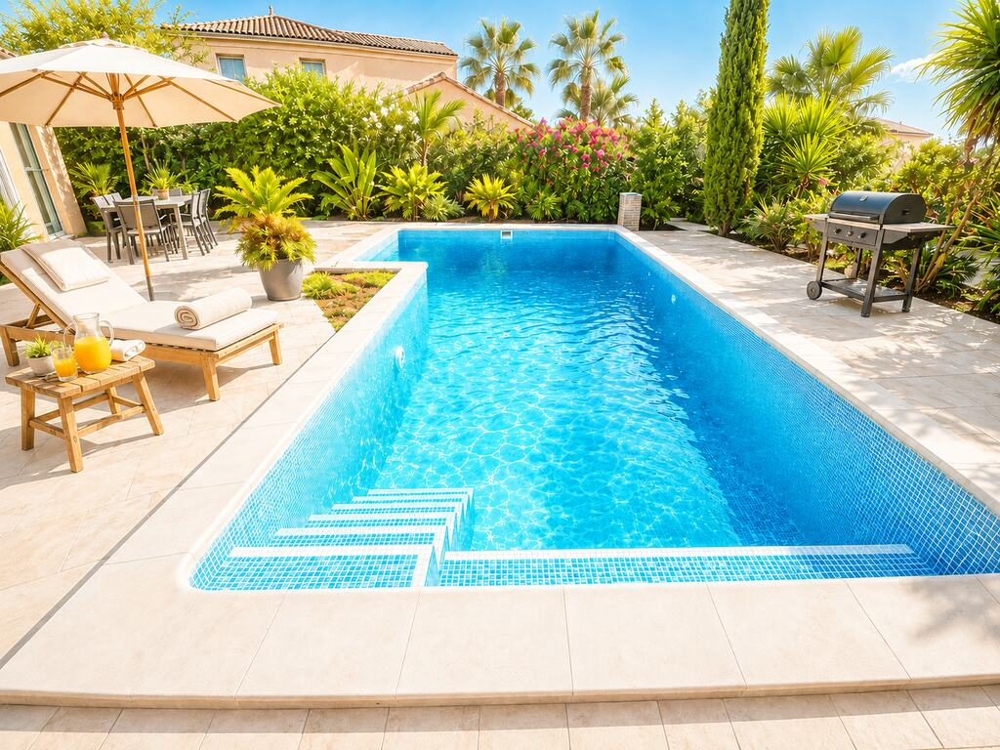
Construccion, reparacion y renovacion de piscinas en la Costa Blanca.

Obra completa a medida: excavacion, ferralla, gunitado, impermeabilizacion y revestimiento.
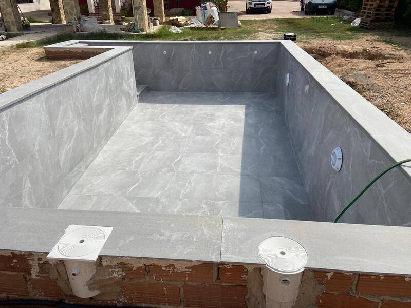
Piscinas antiguas puestas a nuevo: fugas, impermeabilizacion y cambio de revestimiento.
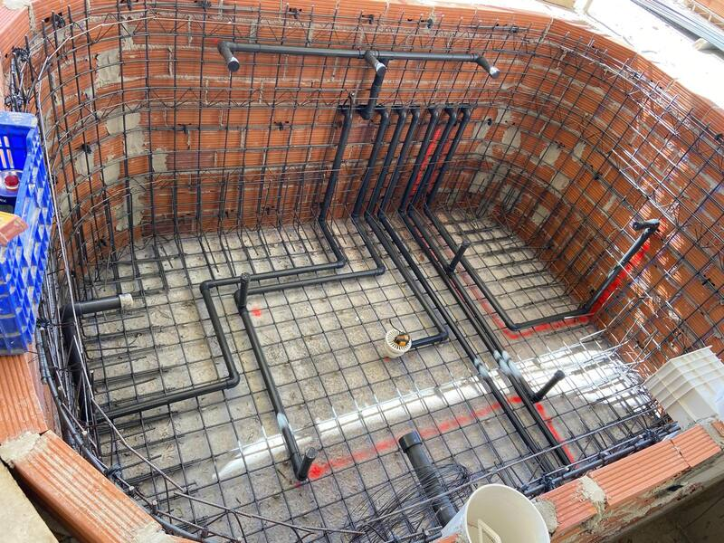
Circuito hidraulico, sala de bombas y agua equilibrada durante toda la temporada.
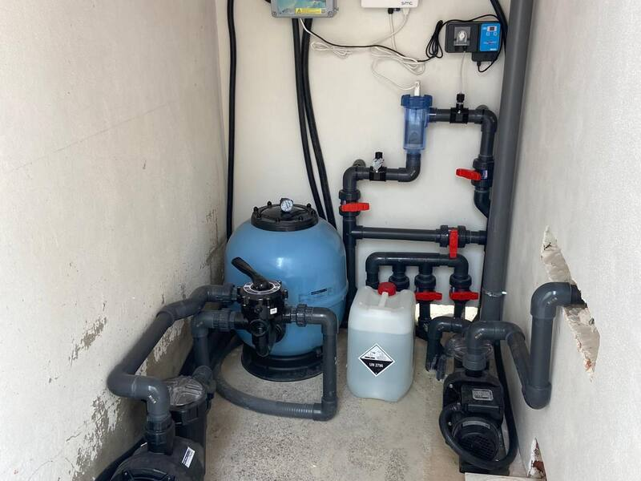
Temporada de bano mas larga, instalacion electrica segura y luz bien colocada.
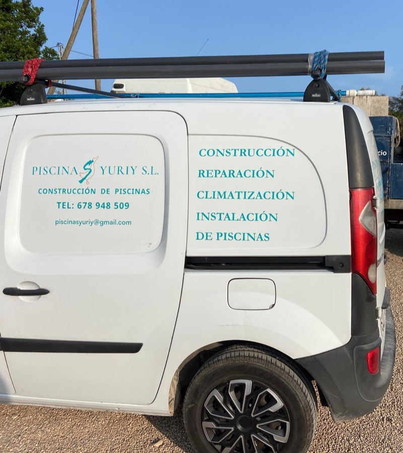
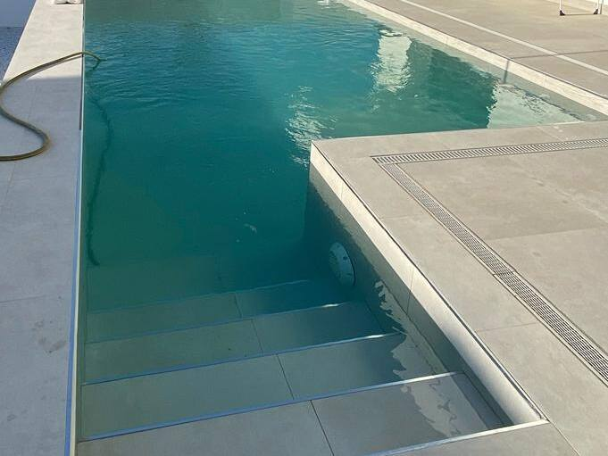
Construccion de piscina
Pego, Alicante
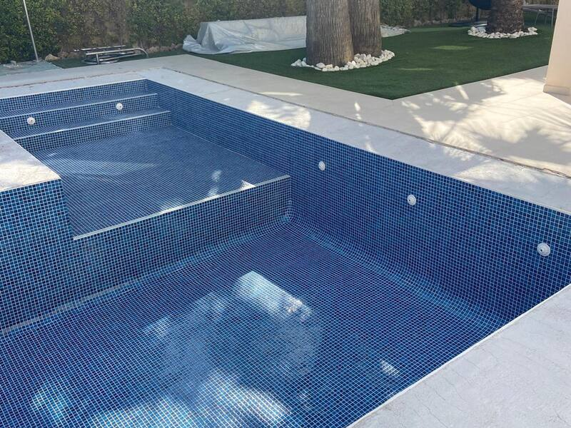
Construccion de piscina
Denia, Alicante
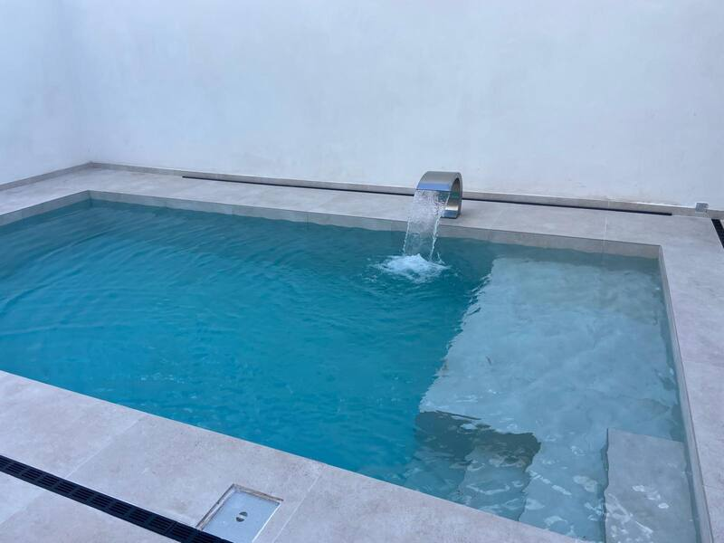
Cascada y lamina de agua
Xabia, Alicante
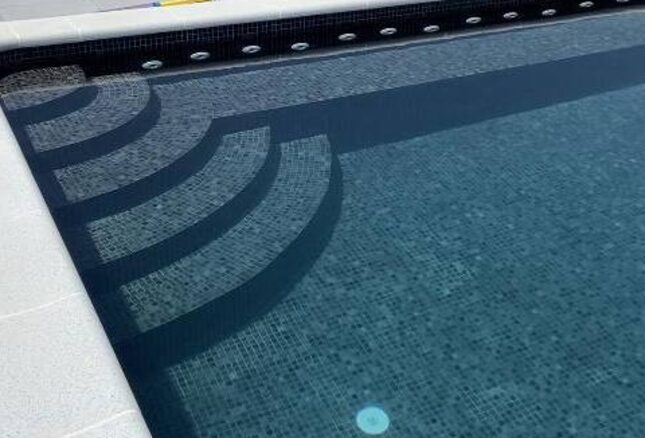
Escalera curva e iluminacion
Ondara, Alicante
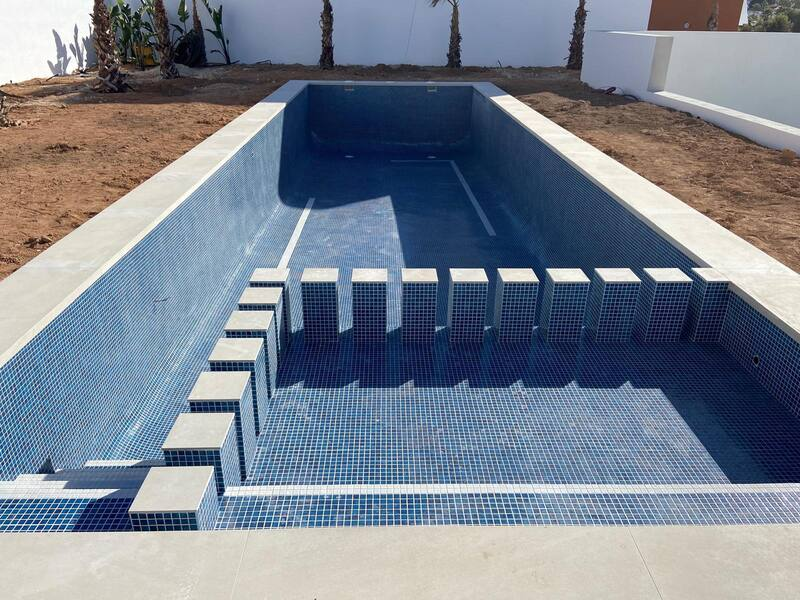
Construccion de piscina
Oliva, Valencia
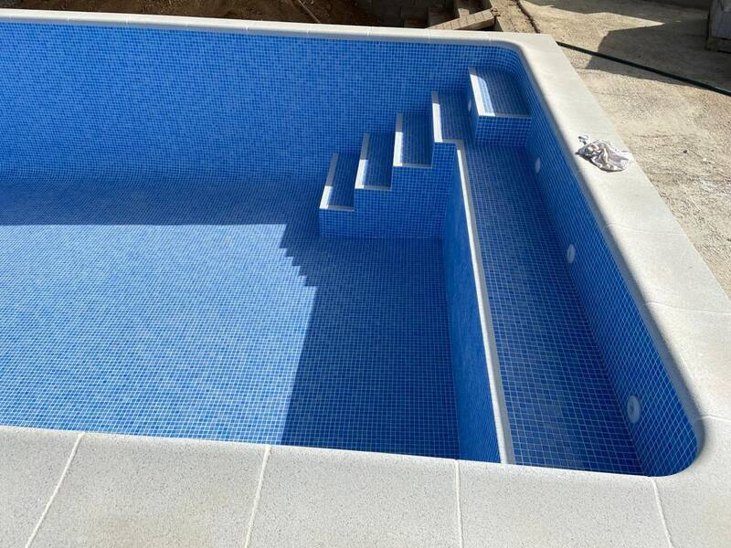
Escalones de acceso
Calp, Alicante
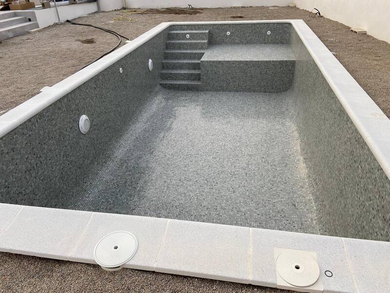
Revestimiento de piscina
Teulada-Moraira, Alicante
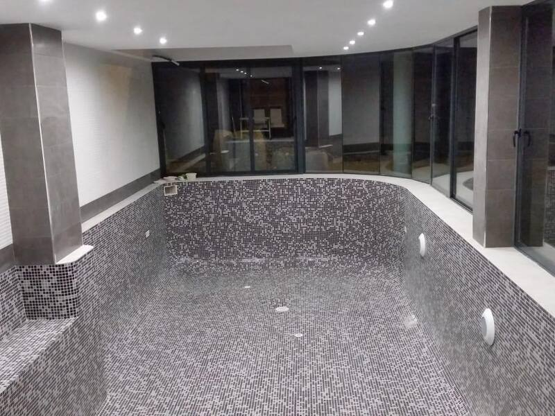
Piscina interior cubierta
Gandia, Valencia
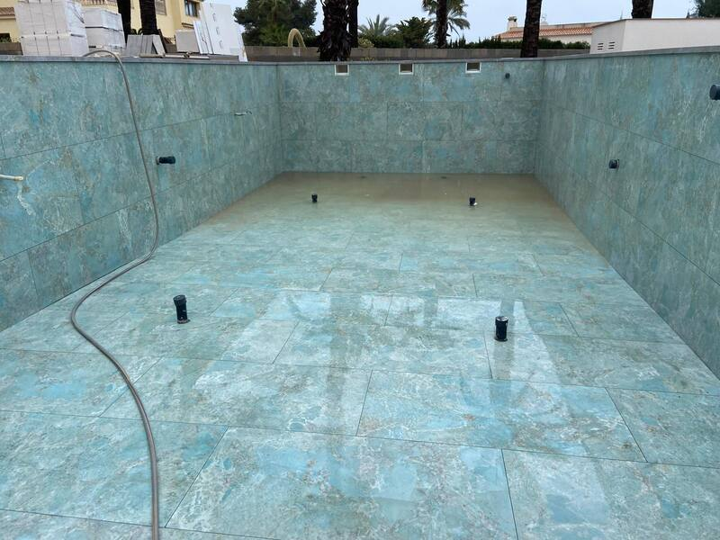
Revestimiento en gresite claro
Altea, Alicante
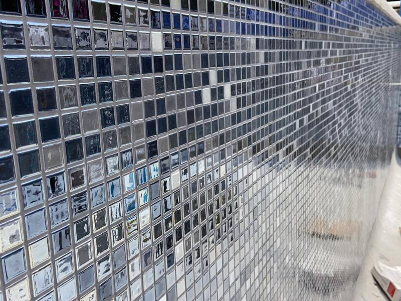
Mosaico decorativo
Benidorm, Alicante
Depende del tamano, el terreno y los materiales elegidos. Solicite presupuesto personalizado sin compromiso.
Piscina de obra en hormigon gunitado, gresite o porcelanico, cloracion salina y bombas de calor.
Entre 8 y 12 semanas segun tamano y permisos. Plazo exacto segun el proyecto.
No estudiar el terreno, elegir mal los materiales o saltarse los permisos municipales.
Primer contacto por telefono o WhatsApp para entender que necesitas.
Visitamos el terreno, medimos y estudiamos el proyecto in situ.
Presupuesto detallado y sin compromiso, sin letra pequena.
Obra, seguimiento continuo y entrega llave en mano.
Cubrimos toda la Comunidad Valenciana, desde el area de Valencia hasta Alicante, con base en Pego.